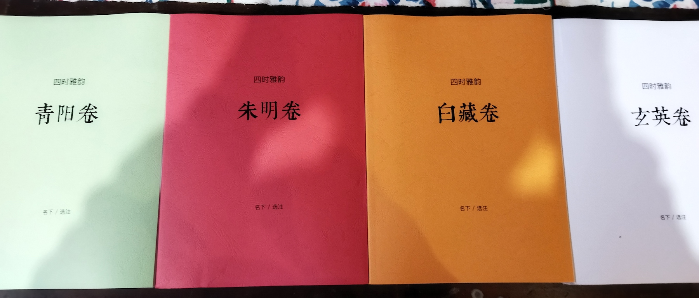

四时雅韵：越百千之年，结古今之心
吾儿景行，尚在襁褓，日日在侧，满院皆芳。每抱其入怀，不禁歌之以声，诵之以韵，莫不欢喜颜笑，旋而入梦。及至十月，将满周岁，吾为人父，儿若珍宝，既为珍宝，则必以珍宝予之——今将此书，首赠吾儿，以为周岁之礼。/ 2017年记
《四时雅韵》是一套「以四时之序，循天地自然之变，选古今传世之作，上迄周秦，下至明清，纳诗、词、歌、赋、传奇、文章」为一处的古诗文选集。

正式出版前，本书仅以试读版的形式（打印版）对外传播。作为试读版，各卷内容业已确定，唯部分注释、封面、版式、略传以及后记等内容尚在修订及制作中。试读版单本50元/快递费另计、套装160元/包邮。
前序
经典者，千百年光射牛斗，其于今人，莫过于治学、求知、赏玩。
今偏居四年，门对青山，后依碧水，四时之景，入目可见；鸟鸣虫吟，侧耳可听，然学有不逮，难以言表。每每至此，口脱先贤之妙笔，古人言契眼前景，竟相得益彰。
遂发心，何不以四时之序，循天地自然之变，选古今传世之作，上迄周秦，下至明清，纳诗、词、歌、赋、传奇、文章，以为《四时雅韵》，依时而读，岂不快哉！
想苍天、昊天、旻天、上天，是为天之四时；青阳、朱明、白藏、玄英，是为气之四时；发生、长赢、收成、安宁，是为地之四时，然人生于世，莫不头顶穹天，脚踏后土，而存活于万千气象之中，四时之天地各异，四时之人，亦有异矣！
观春之萌动、情多而尤敏，敏则易伤；夏之蓬勃、繁盛而多暑，暑则易燥；秋之高远、易生慷慨豪迈之心，然百叶凋零，萧索横生，使人百结归一，徒起悲意；冬之清冷，气寒人稀，恰适独处，独则易思，三省吾身。
如此，依时而选、而读，越百千之年，结古今之心，时不论花满阳春、叶落三秋，地不论孤烟漠北，莺歌江南，皆可寻得佳句妙章，以应眼前之景、尽抒胸中之气。
故曰：“先贤之文，非出吾笔，但抒吾心，且能抒尽吾心难言之美、之烈、之慨、之思，往来激荡，于外则如沐春风，平生雅趣，吾心乐、妻子皆乐，其乐融融；于内则以古人之思虑、传奇之悲喜，察于今或观于内，处乱世而可独处独行，明是非、辨浊清、存理智、享自由。”
吾尝将此心语于客，初喜，继而有忧色，曰：“盛夏之夜，繁星无计；千载之邦，锦绣万里，君当何以取之？且文无高下，千秋各有，孰优孰劣，何以判之？况为文者上有帝王将相、中有名士风流、下有山野行者，何以择之？此非易事矣！”
“吾闻有扁舟小儿，夜入沧海，以觅宝珠，难之乎？然有神助，幸得而返。吾之难，岂若小儿之难乎？且吾亦有神助！”
吾之神，吾之心也！
岂不闻古之有言：人者，天之贵物也。所贵者何？澄澈之心也。
吾性本拙，唯不惜力，编选此书，尤感所学之浅薄，朝夕之间，不敢懈怠。故索能及之书于案前，抛诸杂念，张诸感官，以诗文为流水，以素心为河床，无有遮拦，坦坦荡荡，流水过处，自成沟壑。无有波澜者，自匆匆而过；白浪翻飞者，必良久不息。所谓白浪，应是目触其文，眼浮其景，身为所动，情为所倾，喜不胜喜，悲不胜悲，乃至扼腕慨叹，物我两忘，遇此般诗文，即标号做记。十余日后，复以流水之法观之，如若情思不减，则堪居雅韵之列，如此反复。
盖全书纳青阳、朱明、白藏、玄英四卷，凡三百六十篇，各录诗三十、词十五、歌十五、辞赋八篇、志怪传奇七、文章十五，以成吾志。
余少小为文，辄感字有神在，每每下笔，必体态端庄而心怀敬畏，不敢肆意铺陈而出失心之语。编选此书，倍审慎之，唯持以传世之心念，方可成一己之兴致。
吾儿景行，尚在襁褓，日日在侧，满院皆芳。每抱其入怀，不禁歌之以声，诵之以韵，莫不欢喜颜笑，旋而入梦。及至十月，将满周岁，吾为人父，儿若珍宝，既为珍宝，则必以珍宝予之——今将此书，首赠吾儿，以为周岁之礼。
今之诸人，有自囚于方寸天地，有痴迷于蝇头蜗角，有深陷于恨爱纠葛，凡此种种，身心俱疲。身心俱疲，则万物不美，纵珠玑诗文，亦不过废纸残章。
然致远之道，虽非熙攘，必有君同，若幸得遇，愿以此书为始，共话知音。
名下 / 2017年始作于京郊
名下 / 2019年增补于西安
例言
- 全书四卷，计各卷所选、引诗及封面用典，共三百六十五篇。
- 非为特定人群，不持功利目的。
- 既无功利之目的，则无裁剪之必需。
- 凡所本、所引之故事有雷同者，不拘文体，优选其一。
- 凡诗文用词有异议者，必究其根源，以诸版本审校之。
- 选之在我，读之在人，各存心境，故不加评语，谨置批注之地，以利诸君，尽抒其怀。
- 持守以下原则，力避一切干扰图景之因素：
- 无插图或弱化插图，以避无限之境困于一隅。
- 无白话译文，以避致美之言淡然无味。
- 所见之内，无两篇诗文，以避图景相扰心不可留。
- 须加注解之文字，以下划线标注，以避常规之法阻断阅读。
- 卷末附作者略传，为文者列其名，编撰者选其书，依时而序，言简意赅。
- 此书宜为友为伴、宜吟之诵之、忌束之高阁。
封面典故
“燕昭王种长春树，叶如莲花，树身似桂树，花随四时之色。春生碧花，春尽则落；夏生红花，夏末则凋；秋生白花，秋残则萎；冬生紫花，遇雪则谢。故号为长春树。”（南朝/梁 任昉 《述异记》）
最后更新：2021年3月19日、返回个人介绍页